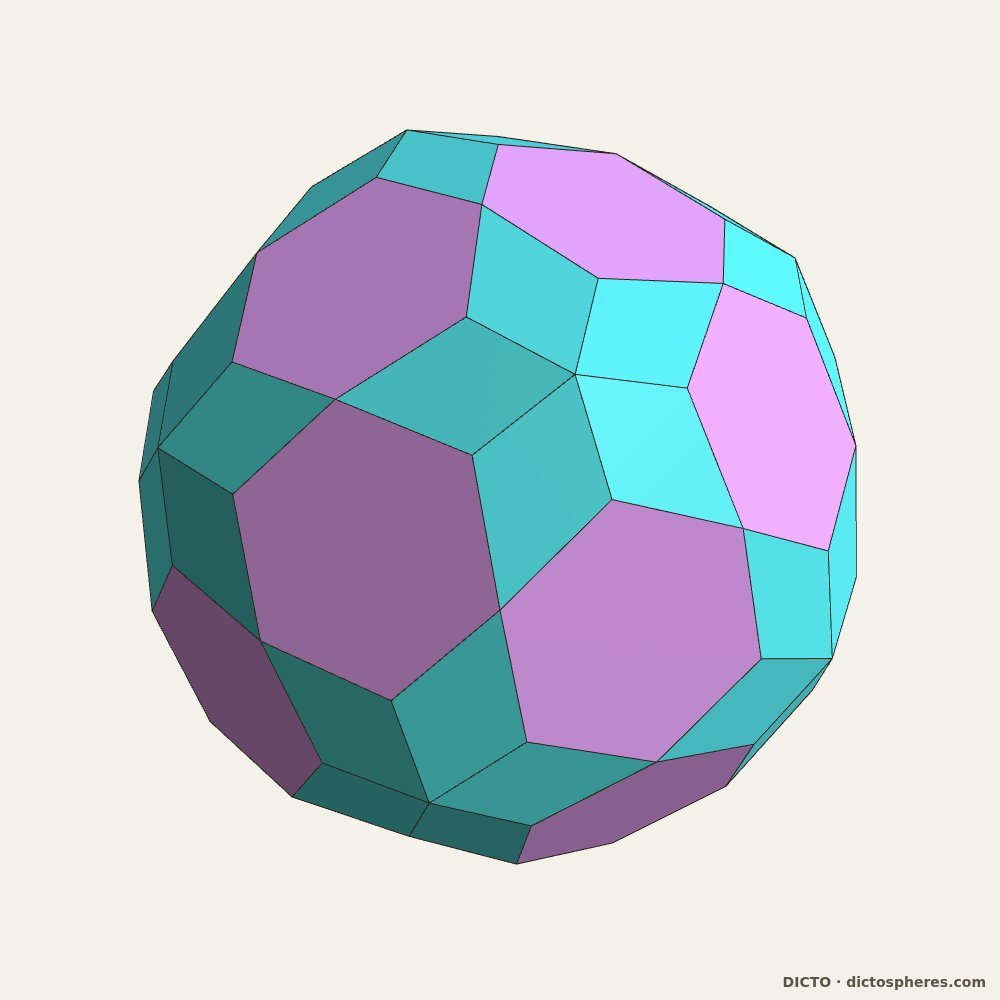
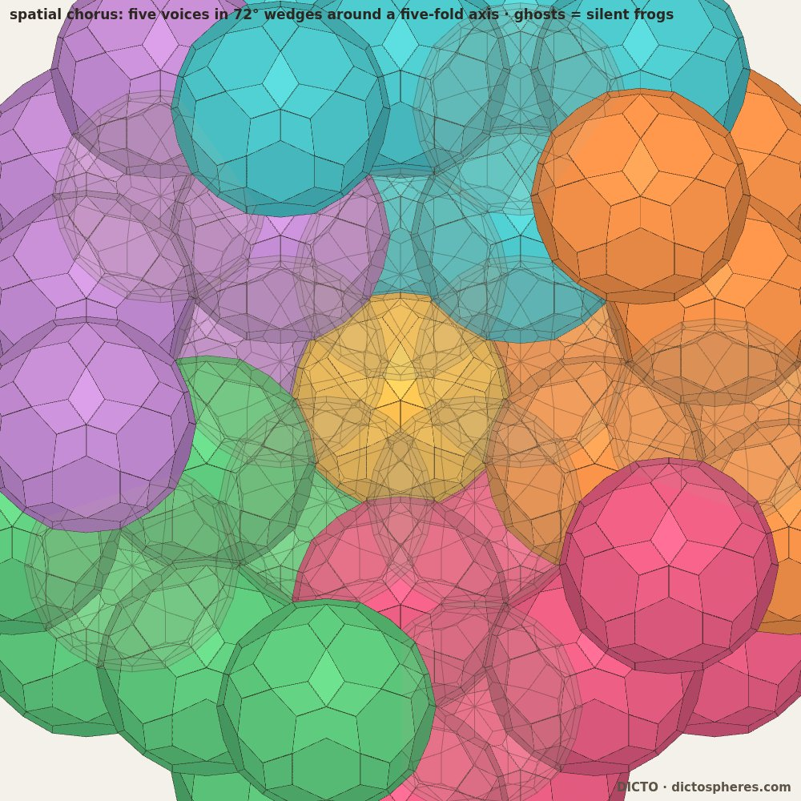
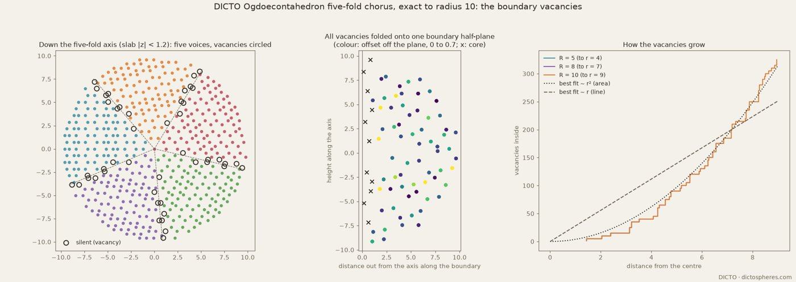
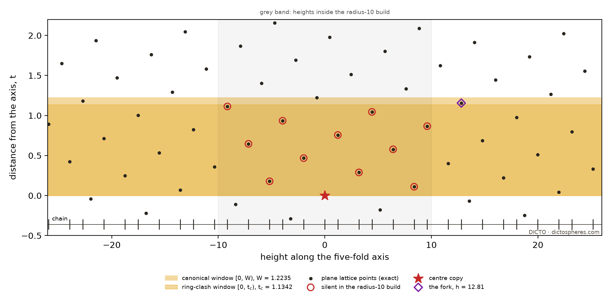
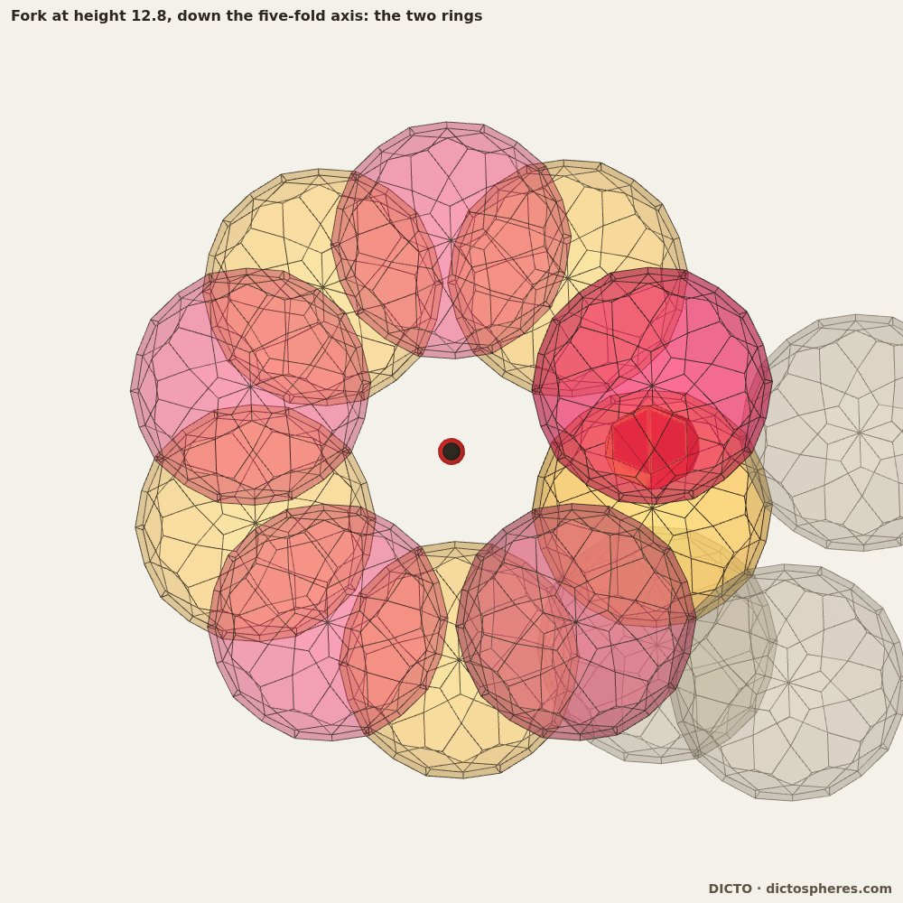
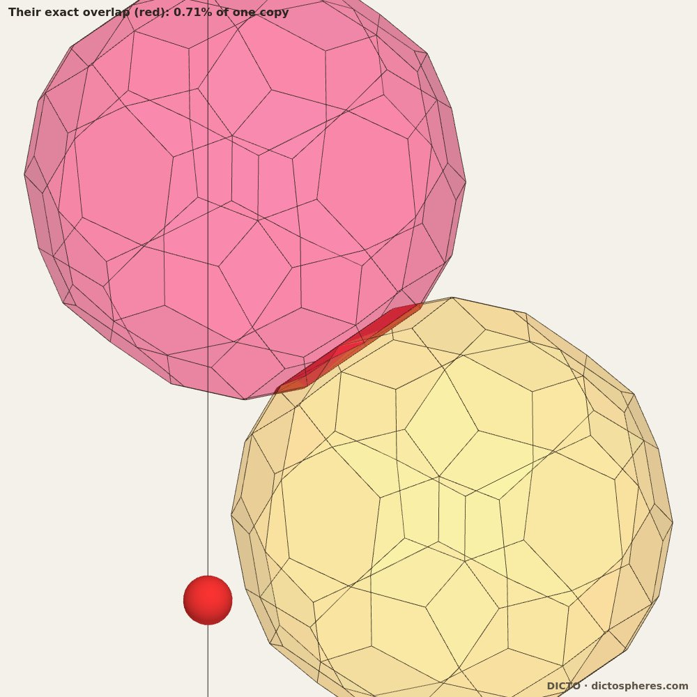

Five periodic packings of one icosahedral solid meet round a five-fold axis; together with the central copy, the copies that must be removed along the axis form exactly the canonical Fibonacci cut-and-project chain for |h| < 12.8, enforced by a five-fold ring clashing with itself; beyond that, minimal removal thins it
Periodic crystals repeat; quasicrystals are ordered without repeating, and can be described as cuts through higher-dimensional lattices. Between the two lie twinned crystals. When grains of one crystal meet at an irrational orientation, the interface between them can itself be a one-dimensional quasicrystal (Sutton 1988, 1989, 1992; Rivier & Lawrence 1988; Gratias & Thalal 1988); a recent cut-and-project framework for such interfaces finds generalised Fibonacci sequences in bcc tilt boundaries (Xiong et al. 2026). Five cubic variants turned by 72° about an irrational axis form the icosahedral irrational twin, whose coincidence-lattice approximants stack in Fibonacci order (Ranganathan, Srivastava & Lord 2006). Pauling (1985) proposed (a view since superseded) that icosahedral quasicrystals are multiply twinned cubic crystals; Prodan et al. (2017) describe icosahedral tilings as cyclic twinning of golden rhombohedra.
This paper follows one solid through such a twin, exactly. Five periodic packings of the DICTO Ogdoecontahedron meet round a five-fold axis. Hard copies cannot overlap, so some must be removed ("silenced"). We show that the copies removed along the axis (the spine), together with the central copy, are not merely quasiperiodic but are exactly the canonical Fibonacci chain for |h| < 12.81, that the window comes from a five-fold ring of copies clashing with itself, and that beyond |h| = 12.81 minimal removal departs from it.
Every statement is labelled. Exact means proved or checked in ℚ(√5) with rational arithmetic; float means computed in floating point and not proved.

The DICTO Ogdoecontahedron (DICTO's companion paper, in preparation) is the polar reciprocal of the DICTO Truncated-Icosahedral Hecatodihedron (DICTO DOI: 10.5281/zenodo.23360858), and the second station of the Spheres of Dharma turned inside out (DICTO DOI: 10.5281/zenodo.23310833). It is centrally symmetric and has 80 faces (20 regular hexagons, 60 kites with angles 117.85° (twice), 68.62° and 55.69°), 102 corners (12 of degree 5, 30 of degree 4, 60 of degree 3) and 180 edges. All coordinates are exact in ℚ(√5). It is not canonical: its edges lie at two distances from the centre, so it has no midsphere.
Face arrangement (exact). An exact face-map comparison (mirror images allowed, with positive and negative controls) shows that its face arrangement is that of the pentakis dodecahedron with its 20 six-fold corners cut down to the edge midpoints, equivalently the dual of L0(D), the joined-lace dodecahedron in Antiprism's operator notation (built from its written definition; the program itself was not run). The arrangement is therefore obtainable by standard operations. It is not, however, in David McCooey's Visual Polyhedra, whose 553 solids we scanned in full; its nearest relative there is the 6-truncated pentakis dodecahedron (20 hexagons, 60 pentagons), whose truncation ends, at the edge midpoints, in this arrangement. The printed catalogues (Wenninger, Holden, Pugh) were ruled out by scope, not read. The metric solid, with regular hexagons and these kites, was not found in any source checked.
Bonds and cubes (exact). Joining two copies face to face on a hexagon, with no rotation, displaces one by the bond vector 2d·n/|n|² of that hexagon (n its normal, d its plane offset). The 20 hexagon directions contain exactly five sets of eight that form a cube (pairwise cosines ±1/3 and −1): the five inscribed cubes. The eight bond vectors of a cube point to its corners, so they generate a body-centred cubic lattice, and copies on it meet face to face on eight hexagons each. The joints form a simple cubic lattice; each of the packing's two interpenetrating diamond sub-networks has its joints on a pyrochlore lattice. These five periodic packings are the five voices.
The chorus. Fix a five-fold axis through a degree-5 corner of the central copy. Space is cut into five 72° wedges round the axis (starting angle 59°, a choice), and wedge k is filled with voice k's lattice points; points on the axis are shared. Turning by 72° about the axis carries each voice to the next, so the arrangement is five-fold symmetric. Neighbouring voices are related by 44.4775° about a shared three-fold axis: this is the icosahedral irrational twin (Ranganathan et al. 2006). Where wedges meet, and near the axis, copies of different voices overlap. They are removed in whole five-fold rings by a greedy rule (float clash test): repeatedly remove the ring of the copy with most clashes, ties going to the copy farther from the centre.


The solid K is centrally symmetric, so K − K = 2K, and two copies at X and Y have disjoint interiors if and only if some face plane n·x = d of the solid has n·(X − Y) ≥ 2d; they touch when the best face gives equality. Copies farther apart than twice the circumradius cannot overlap, so checking every closer pair is complete. All positions are integer combinations of exact bond vectors.
| Radius | Sites | Removed | Close pairs checked | Overlaps | Touching |
|---|---|---|---|---|---|
| 5 | 336 | 80 | 620 | 0 | 620 |
| 8 | 1471 | 240 | 3630 | 0 | 3605 |
| 10 | 2756 | 385 | 7465 | 0 | 7390 |
The choice of what to remove is float; the result is exact. At radius 5 an integer program (float clash test) finds the minimal five-fold-symmetric removal to be 16 rings (80 copies), the same as the greedy rule, and not unique; without symmetry the minimum is 72.
Lemma (golden heights, exact). Measured along the five-fold axis, every bond vector has height (m + nφ)u with u² = 8/81 − 8√5/405 (u ≈ 0.233658), the pairs (m, n) being only (±1, 0) and ±(1, 2). Every site is an integer combination of bonds, so every copy in the chorus, at any radius, sits at a golden height (m + nφ)u.
Near the axis the removals come in rings of five, one copy per wedge. Within 1.05 of the axis the radius-10 build has 11 such rings. Their squared distances from the axis include φ², φ⁴, φ⁶ and φ⁸ times the innermost (exact).
One plane, one lattice, one window (exact). Ten of these have their wedge-0 copy in one plane through the axis; one (distance 1.0042) does not, and the build also removes off-plane copies at 1.084 and 1.136 from the axis. The plane holds 11 removed copies in all: these ten and one more at t = 1.11313. The 73 sites of that plane in the build are integer combinations of two basis vectors, and in that basis the axis has slope −φ = −1/2 − √5/2, which is irrational, so heights along the axis are all distinct. With t the distance across from the axis, the removed plane copies are exactly those with 0 < t below a window edge: no kept plane copy has 0 < t inside it, and no removed one lies outside. The central copy, at t = 0, is kept, since its ring is itself. Lattice points of a planar lattice in a strip along an irrational line are, by definition, a cut-and-project (model) set (Baake & Grimm 2013).
The canonical window (exact). The gaps between consecutive removed heights take the values S = 1.22345, L = 1.97958 and T = 3.20304, with L/S = φ and T = L + S exactly; the gap vectors of L and S have plane coordinates (1, −1) and (1, 0), a lattice basis. The canonical window length is therefore W² = 64/81 + 128√5/405 (W = 1.223451; it equals the short gap S exactly), and the single T is where the chain point at height 0, the central copy, sits (on the axis, t = 0, kept). With window [0, W), the chain points inside the build are exactly the 11 removed copies and the centre; the copy exactly on the far edge (t = W, height −0.756) is kept. Extended exactly to heights ±45, the same window gives 54 points with only two gaps in ratio φ (33 long, 20 short) forming a factor of the Fibonacci word. Both window edges are lattice points: the chain is a singular member of the Fibonacci family, with the centre on the closed edge.

A plane copy at distance t from the axis and its four ring-mates (the same copy turned by 72°k, sites of the other voices) differ by vectors perpendicular to the axis and proportional to t. So whether a ring overlaps itself depends on t alone. Checked exactly for every plane copy with t < 1.6: each removed copy overlaps its ring-mates, each kept one clears them. The critical distance, where ring-mates just touch, is exact and the same for every plane site:
tc² = 8/9 + 8√5/45, tc = 1.134201.
It lies strictly between the largest removed t (1.113132) and W (1.223451); for the copy on the canonical edge the best face function of the ring-mate pair is 28/81 − 4√5/27 > 0 (exact; positive: apart; the face function uses the data's unnormalised normals, so only its sign matters). The 144° ring-mates clear already beyond t ≈ 0.701 (float), so the 72° mates set tc. So tc ≠ W, and hardness alone gives the narrower window [0, tc). No plane lattice point has tc ≤ t < W for |h| < 12.812, so there the two windows select the same lattice points. The removal pattern itself is checked in the build (|h| < 10) and, in float, on the patch round h = 12.81 (heights 5.8 to 19.8). The first lattice points between the two windows are at heights 12.812, −22.71, 34.77 and −44.66.


We built every site of all five voices in a cylinder round the axis at that height (1135 sites; exact). The core copy at height 12.8121 (t = 1.1553, plane coordinates (8, −4)) clears all four ring-mates, as §6 predicts. Of the seven copies near enough to matter, it overlaps exactly one, its rival: a copy at height 13.8019, distance 1.1690 from the axis, in the next wedge, outside the core plane, whose own ring does not clash with itself. Their best face function is 232/81 − 104√5/81 < 0 (exact; negative: overlap); with normalised normals the pair would need 0.046 to separate along the best face normal (float). The rival overlaps two further copies (exact): a core-plane copy at height 14.79 that is removed in any case, and a copy at height 14.04, distance 1.91 from the axis, whose ring does not clash with itself.
So the clash can be resolved in two ways:
Minimal removal (integer program over whole rings, float clash test, on patches of about 1130–1155 sites). At each of the first four points where the two windows disagree (heights 12.81, −22.71, 34.77, −44.66) the pattern is the same (float at the other three), and keeping the core copy is cheaper by exactly one ring (43 against 44, 46 against 47, 45 against 46 and 42 against 43). The chorus’s greedy rule agrees: the rival has more live clashes than the core copy, so it is removed first. On these patches (integer program over whole rings, float clash test), hardness with minimal removal therefore departs from the Fibonacci chain at |h| = 12.81, and as far as checked follows the narrower ring-clash window [0, tc): a thinned three-gap cut-and-project chain. Staying Fibonacci costs at least one extra ring at each departure point; a simple greedy rule that does it (remove first the ring nearest to clashing with itself) is far from minimal, removing 555 copies instead of 385 in the radius-10 build. Either way the spine remains a one-dimensional cut-and-project chain.
Away from the axis, removals lie along the five wedge boundaries. Their number grows like area, not length (5, 20, 60, 95, 145, 205 and 275 within radius 3 to 9), and their density per boundary area is still rising at radius 9 (0.31 to 0.43 from radius 5 to 9). The distance from the seam plane does not decide which copies go: kept and removed copies share offsets on both sides, so there is no simple slab rule. The 66 distinct vacancies of one seam diffract strongly: strongest peak I/N = 46.6, against 66 for a perfect Bragg peak and 11.8 ± 2.0 for random sets of the same size, with 15 of the 16 strongest peaks within about 0.3 (the peak width set by the build size) of projected reciprocal-lattice vectors of the two neighbouring voices. This is consistent with incommensurate, quasiperiodic-type order, but 66 points cannot tell it from a long-period approximant.
Relation to known work. That interfaces between periodic grains can be one-dimensional quasicrystals is classical (Sutton; Gratias & Thalal; Rivier & Lawrence), with a recent cut-and-project framework (Xiong et al. 2026), as is the fact that lattice points near an irrational line form a model set (Baake & Grimm 2013). Katz & Gratias (1993) bounded icosahedral windows by hard-core and closeness conditions: there the window is chosen to maximise density inside a six-dimensional model, and, in the standard form of the hard-core condition, exclusion acts between points related by a lattice translation (we have not read the 1993 text itself). Here nothing is chosen: the removed set is the window, forced by overlap, and the exclusion acts between a copy and its own five-fold rotated images, which belong to four other periodic packings. One-dimensional lattice gases with convex repulsive interactions (Hubbard 1978), and suitably designed models (van Enter, Koivusalo & Miękisz 2019), have Sturmian (cut-and-project) ground states, a related selection by energy rather than by shape.
Not a disclination. Five-fold twinned particles (fivelings) carry a wedge disclination along their axis, with an angle gap relieved by strain or defects (Hofmeister 1998). The chorus has no gap and no strain; its axis is a line of irrational direction shared by five lattices, and the price of five-fold symmetry is paid in vacancies. Hard shapes are known to form five-fold twinned clusters in simulation (Lee & Glotzer 2022), in floating point and with an angle gap; we know of no exact junction check for a hard polyhedron.
What we did not find. A Fibonacci chain along a five-fold junction line rather than across a planar interface; a window fixed by a ring clashing with itself, with an exact critical distance; an exact overlap check of a five-fold junction of hard-polyhedron packings; minimal removal departing from the canonical window to a narrower one. The search covered our reference library, the web and one bounded literature review (§11). Several key papers are closed access and were read through abstracts and open restatements only; we present the results as a new exact instance of known ideas and make no claim of priority.
Limits. The packing is checked to radius 10 and the departure points on patches of about 1130–1155 sites, the first four only; the choice of removals and the integer programs use a float clash test (the clashes at 12.81 are confirmed exactly); the seams are float throughout; the off-plane removals near the axis (a ring at 1.0042, and copies at 1.084 and 1.136) are not analysed here.
Scripts and outputs are in studies/2026-10-16-ocd-pyrochlore of the Kaleidohedra repository (branch research): chorus_exact_big.py (the exact chorus, any radius), chorus_heights_exact.py (§4), chorus_modelset.py and chorus_canonical.py (§5), chorus_window_why.py (§6), chorus_h128.py, chorus_fork_data.py, chorus_rules.py, chorus_fork_min.py and chorus_fork_exact2.py (§7), chorus_boundary.py (§8), ocd_dl0d.py and ocd_catalogue_scan.py (§2), each with its output in data/. The literature review is FABLE-PRIORART.md. The radius-10 site file data/chorus-exact-r10.json is regenerated by chorus_exact_big.py 10.0; the scripts also use studies/2026-10-16-polar-dharma and studies/_lib in the same repository. Movies of the boundary sweep, the window and the fork are supplementary.